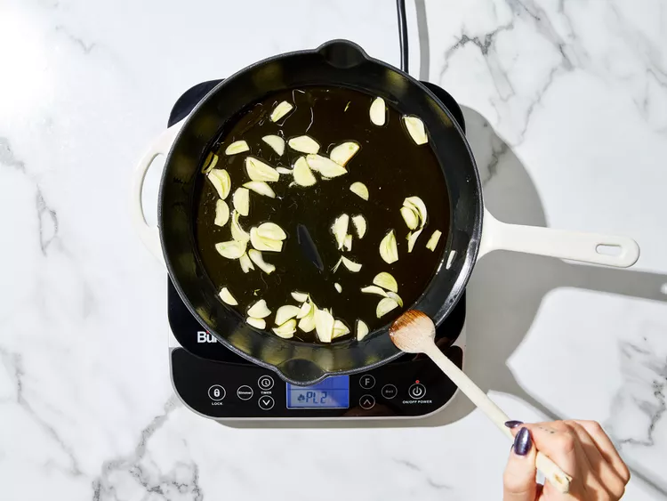
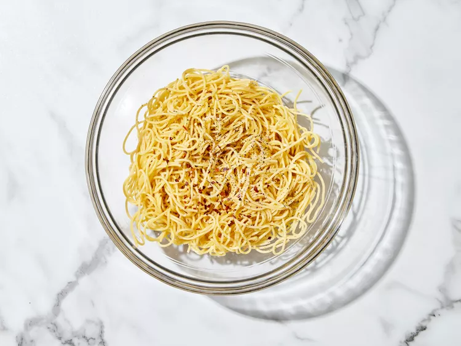
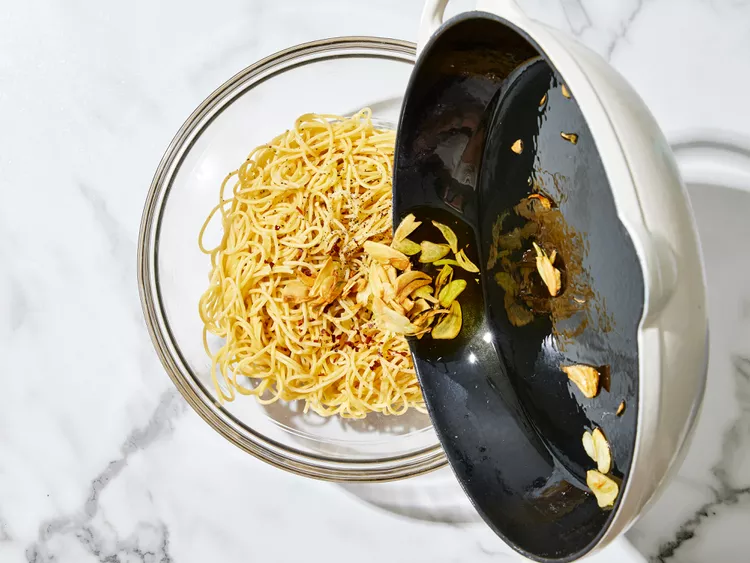

- Gather all ingredients.

PHOTO: DOTDASH MEREDITH FOOD STUDIOS
- Bring a large pot of lightly salted water to a boil. Cook spaghetti in the boiling water, stirring occasionally until cooked through but firm to the bite, about 10 to 12 minutes. Drain and transfer to a pasta bowl.

PHOTO: DOTDASH MEREDITH FOOD STUDIOS
- While the pasta is cooking, combine olive oil and garlic in a cold skillet.

PHOTO: DOTDASH MEREDITH FOOD STUDIOS
- Cook over medium heat to slowly toast garlic, about 10 minutes. Reduce heat to medium-low when olive oil begins to bubble. Cook and stir until garlic is golden brown, about another 5 minutes. Remove from heat.

PHOTO: DOTDASH MEREDITH FOOD STUDIOS
- Stir red pepper flakes, salt, and black pepper into pasta.

PHOTO: DOTDASH MEREDITH FOOD STUDIOS
- Pour in hot olive oil and garlic, and sprinkle on Italian parsley and half of the Parmigiano-Reggiano cheese; toss until combined.

PHOTO: DOTDASH MEREDITH FOOD STUDIOS
- Serve pasta topped with the remaining Parmigiano-Reggiano cheese.
PHOTO: DOTDASH MEREDITH FOOD STUDIOS